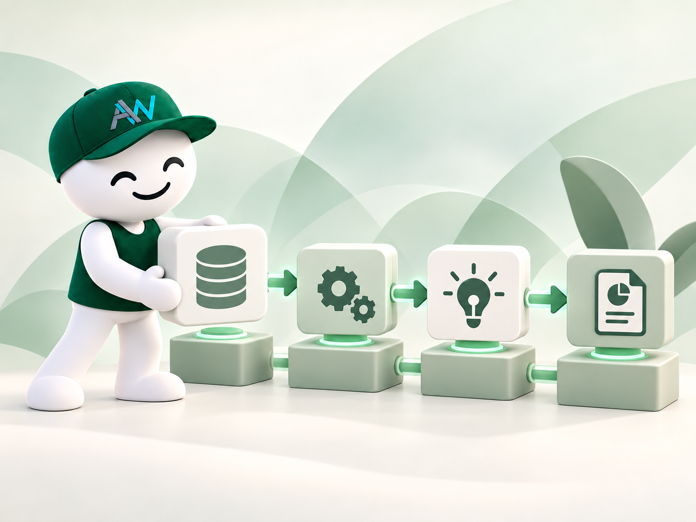

Operations
Run allocation research with an institutional-grade decision trail.
AlphaWeave Capital gives research and portfolio teams operating infrastructure for long allocation experiments. It plugs into existing configuration, data, run, report, and recovery workflows so teams can inspect what changed, reuse evidence safely, and explain whether asset selection, strategy selection, or AI-assisted sizing helped performance.

Click an operations surface to see what it controls.
Audit trail
A flight recorder for every reviewed decision.
When a run succeeds or disappoints, the team can review what happened instead of guessing. The pipeline preserves the context needed for research review, risk oversight, and management reporting.
Click a report artifact to see why it matters.
Diagnostics
Diagnostics that explain the result, not just the return.
The organization gets more than a performance number. It gets evidence about model behavior, cache reuse, chart interpretation, handoffs, execution state, and monthly contribution by stage.
Click a diagnostic report to see what it verifies.